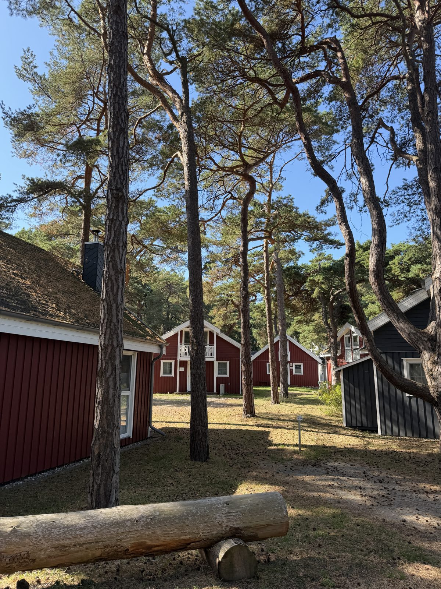
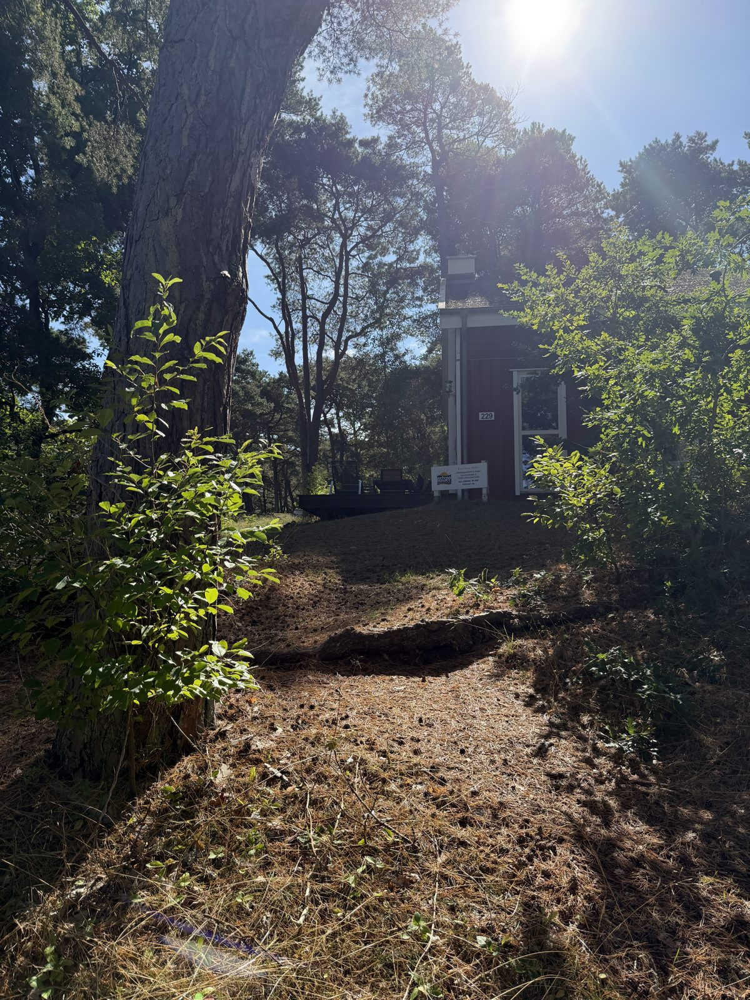
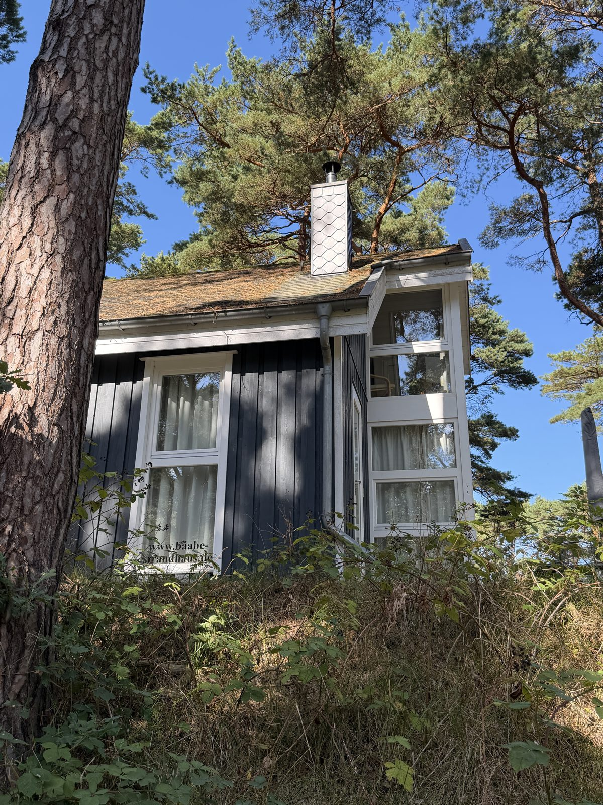

11. September 2026
Ferienhäuser in Baabe

Mitten im Kiefernwald, nur wenige Schritte von den Dünen entfernt, reihen sich die kleinen Ferienhäuser von Baabe aneinander.


Auf den Häusern entdeckt:
🏠 www.baabe-strandhaus.de
🏠 Ostseeappartements Rügen – www.oar1.de (Granitzenstraße 8, 18586 Ostseebad Sellin, Tel. 038303 90940)